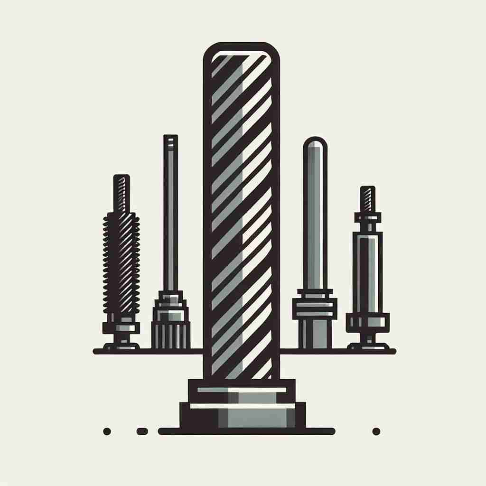

💬 The engineer examined the metal shaft for any signs of wear.

💬 The engineer is checking the metal shaft in the machine.
🔈 [ʃɑːft]
🗝️ n. a long, narrow part or section of something
🖼️ 想象一个工厂流水线，传送带上排列着长且窄的机械部件，它们正等待进一步加工。这些部件外形细长，精准地展示了'shaft'作为长而狭窄部分的含义。
🔍 想象一个细长的物体，如箭杆或工具柄。这个'细长'的核心概念贯穿了'shaft'的各种用法，从建筑中的竖井到光线，再到羽毛的主干。即使是比喻义的'不公平对待'，也可以联想为被长物体（如箭）刺穿的感觉。通过这个核心图像，你可以更容易理解和记忆'shaft'的多重含义。
💬 The engineer examined the metal shaft for any signs of wear.
💬 The engineer is checking the metal shaft in the machine.
🌳 单词 'shaft' 源自古英语 'sceaft'，意为 '杆' 或 '轴'。它通常指细长的物体，如光束、矿井的竖井等。
💡 记忆 'shaft' 时，可以联想为主要用于 '竖井或长杆状物体' 的含义，如电梯的竖井或光的轴线。想象这些物体的形状，可以帮助记忆单词。
🗝️ n. a long, vertical passage in a building or mine
🖼️ 在一座高楼大厦的内部，电梯缓缓上升，经过一层层楼层，电梯井（shaft）笔直而垂直地连接各个楼层。这展示了'shaft'作为建筑或矿井中竖直通道的含义。
💬 The elevator moves up and down the shaft.
❓ 从核心含义延伸，指建筑或矿井中的长而窄的垂直通道
🗝️ n. the long, narrow part of a tool or weapon that is held
🖼️ 在一片绿意盎然的森林中，一位弓箭手手握弓箭，箭杆（shaft）修长而坚韧，从他手中发射而出。这清楚地展示了'shaft'作为工具或武器中手持部分的含义。
💬 He gripped the shaft of the golf club firmly.
❓ 直接应用核心含义，指工具或武器中被握持的长而窄的部分
🗝️ n. a ray of light
🖼️ 清晨的阳光透过窗帘的缝隙照射进房间，形成一道道光束（shaft），洒落在木地板上，温暖而柔和。这个场景体现了'shaft'作为光线的含义。
💬 A shaft of sunlight broke through the clouds.
❓ 比喻用法，将光线想象成长而窄的形状
🗝️ v. to treat someone unfairly or badly
🖼️ 在一个会议室中，一位员工辛勤工作却没有得到应有的认可，上司却将他的功劳归于他人。这样的不公平待遇展示了'shaft'作为对某人不公或苛刻对待的动词含义。
💬 He felt he had been shafted by his business partner.
❓ 俚语用法，可能源于将某人比作被刺穿的目标
🗝️ n. the main stem or axis of a feather
🖼️ 在一个充满自然气息的公园里，一根羽毛轻轻地飘落到地上。羽毛的主干（shaft）笔直而坚硬，承载着柔软的羽毛。这个场景展示了'shaft'作为羽毛主干的含义。
💬 The shaft of the feather was strong and flexible.
❓ 应用核心含义到自然界，指羽毛的主干